The Electrosmith Daisy is an open-source hardware and software platform designed for creating custom digital musical instruments, effects processors, and synthesizers.
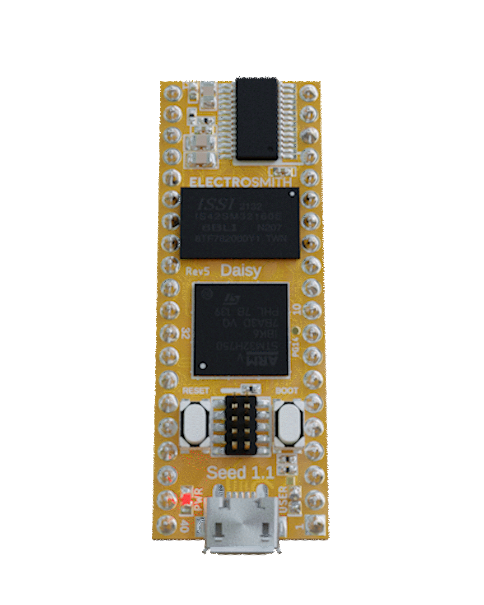 |
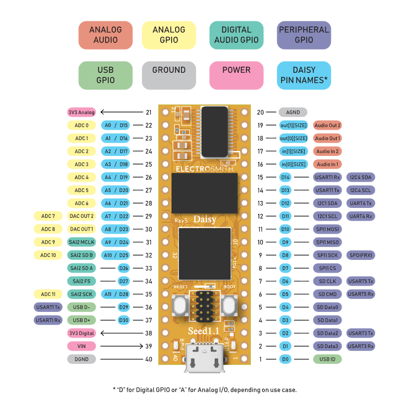 |
|---|
The Daisy Seed is a small development board, similar to an Arduino or Teensy, but with an integrated stereo audio IO interface. It is suitable for developing DIY projects on breadboard type environments, but scalable to professional hardware PCB products (and now widely used in synths and guitar pedals).
Collections of example projects:
Specific products & projects using Daisy:
We have several Daisy Seed boards to use in this class, along with breadboards and many different sensors and other components we can use, including LEDs, knobs, switches, buttons, LED buttons, mono and stereo jacks, light sensors, piezos, touch sensors, muxes, various ICs such as opamps, counters, shift registers etc.
Daisy can be programmed in C++, Max/MSP (Gen~), Pure Data, or Arduino. We'll mostly focus on Max (or C++) in the class. But first, to program a Daisy Seed, we need to install a few things (the "toolchain").
Before we can flash code to the Daisy, there's a lot of software dependencies we need to install for the required toolchain. We only need to set up this toolchain once, but it requires quite a few steps and careful attention along the way!
Let's start at the Getting Started page of the Daisy docs. The libDaisy toolchain includes several other tools:
Git for obtaining the source codeMake for Makefile-based compilation of library and examplesARM Toolchain used to cross compile for the Daisy processordfu-util for flashing programs from the command lineZadig to reset the USB driverFor working with Max/MSP, we'll also need:
Before following the tutorial to install these, you will need to have some pre-requisites installed.
You have two options.
Do you have Homebrew installed?
brew -v into a terminal. If it replies with a version number, you can install the toolchain with this command: brew install make armmbed/formulae/arm-none-eabi-gcc dfu-utilIf not, you can do it via the Apple Developer Tools. Xcode is Apple's developer envionment. It is a huge project and download, but we don't need the whole thing for our purposes; we just need the more minimal "developer tools".
xcode-select -p in a terminal. If it replies with a file path on your system, you have it installed. xcode-select --install. This could take some time. First, check whether you already have git installed! Open a Command Prompt or Powershell, and type git --version -- if it replies with a message starting with git version then you already have git. If not, you need to install git, by running the downloadable isntaller from https://git-scm.com/install/windows
What is
git? Git is a free, open-source distributed version control system designed to track changes in source code and files over time. It is probably the most common way for software developers to distribute code projects today. A project is held in a 'git repository', possibly with different versions in 'branches', which are updated through 'commits'. How it works is beyond the scope for this class, but we will needgitin order to install the Daisy toolchain.
Next follow the instructions of Install the Toolchain at https://docs.daisy.audio/tutorials/toolchain-windows/
You do not need to install Python!
However, it is likely that you will need to use Zadig to reset USB drivers for flashing to the Daisy. See the instructions at https://docs.daisy.audio/tutorials/zadig/
Once you have Max installed, you need to add the Oopsy package. Oopsy is a way to turn Max's gen~ patches into Daisy firmware, and flash the firmware onto the Daisy directly.
To get the Oopsy package, either use the download link or git clone it as described at https://docs.daisy.audio/tutorials/oopsy-dev-env/#getting-oopsy
git clone https://github.com/electro-smith/oopsy.git, make sure you also then cd oopsy and ./install.sh to build it. Now for Max to be able to see Oopsy, we need to install this folder as a "package" for Max, by moving oopsy folder into Max's Packages folder.
C:\Users\YourUserName\Documents\Max 9\Packages. Documents/Max 9/Packages.Now you can restart Max, and verify that oopsy is installed:
oopsy.pod. You should get something that looks like this: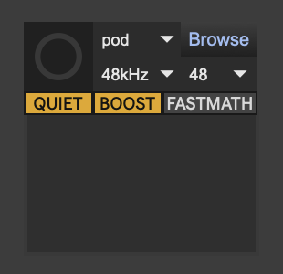
If not, try restarting Max. If that doesn't work, retrace the installation steps.
The main idea is that you have a Max patch that contains both an oopsy object and a gen~ object. Every time you save the patch, or click the button in the oopsy object, it does the following:
gen~ object, and makes it export its code as C++in objects) out objects)param objects with specific names)history objects with specific names that end with _out).bin file.bin to the Daisy over USB, using dfu-util, reporting any errors back to Max. That's a lot of work that you don't have to think about most of the time!
Most of the time, your job is to
Let's make a minimal example:
gen~ object in it. To create one, type 'n' and type gen~. Oopsy will now use that gen~ object to compile and flash to the Daisy. oopsy object in it. To create one, type 'n' and type oopsy.pod. oopsy object if you haven't defined a JSON yet. If you have defined a JSON, click the browse button to find it, or send a target mydef.json message to oopsy (assuming you have a mydef.json file in the same folder as the patcher). 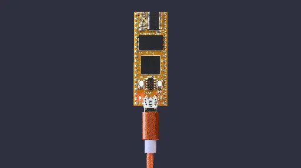
If we want to hear the audio output and start manipulating the algorithm, we'll want to start connecting components to it (such as stereo headphone sockets). The best place to start is with a prototyping breadboard. Here is how a broadboard is internally connected:
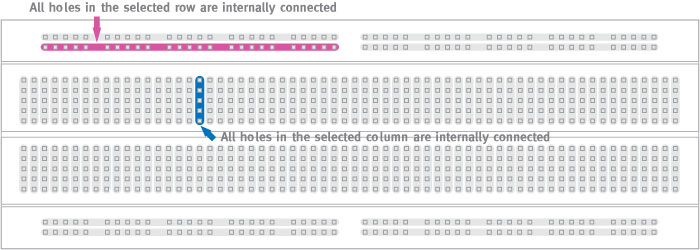
We'll first place a Daisy onto a breadbard. Do this very carefully -- we really don't want to bend any of the pins! First, line up the Daisy over the pin holes. Typically we'll want the Daisy's USB socket at the edge of the breadboard, and the Daisy's centre aligned to the track that runs through the middle of the breadbard. Typically this means you'll have 2 or 3 pins free at either side of the Daisy (see photo below). Then very evenly push on all four corners at the same time, gently first and then more firmly as you find the point where it starts to go in. (If you don't feel confident, ask me.)
(If you ever have to remove it, the best way is to slide a cable or string through the channel underneath the daisy, then pull slowly on both ends of the cable/string to start lifting the chip out of the breadboard. The key is to lift it evenly at all sides, so that no pins get bent!)
Depending on what inputs and outputs you want to use, and how they are configured in your target JSON file, you'll need to wire up different pins to different components on the breadboard.
To know which pins correspond to what purposes, see the pinout diagram at the top of this page or on the https://docs.daisy.audio/hardware/Seed/ page.
For a more detailed view of the pins, see the Datasheet
Ground is also known as the zero volt (0V) reference. The Daisy has two ground ports at pins 20 ("analog ground") and 40 ("digital ground") on the board. You'll nearly always want to connect these together with your board's ground.
If you put the USB port to your left, this is the top-left and bottom-right pins. Connect both of these to the blue ground rails on the breadboard. (I recommend using blue jumper cables consistently to represent ground.) It's easier to wire these to the nearest rail, and then at the other end of the breadboard, put another jumper cable between the two rails to connect them together.
The pinout identifies pins 18 & 19 as the two audio output channels. If you have the USB port to the left, then these are the two pins at the bottom right just before the analog ground pin.
| mono | stereo |
|---|---|
| A mono audio jack needs both the signal and the ground wired up. The signal goes to the tip and the ground goes to the shield/sleeve. | A stereo audio jack needs two signals plus ground wired up. One signal channel goes to tip, another goes to ring, and ground goes to shield/sleeve. |
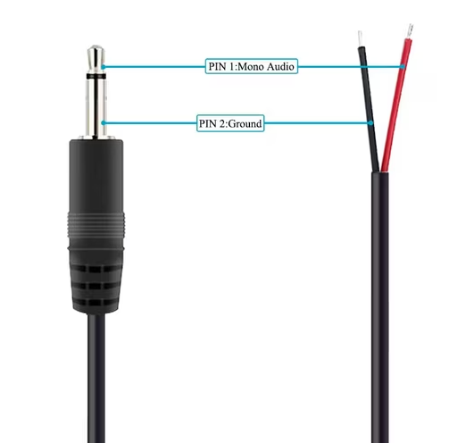 |
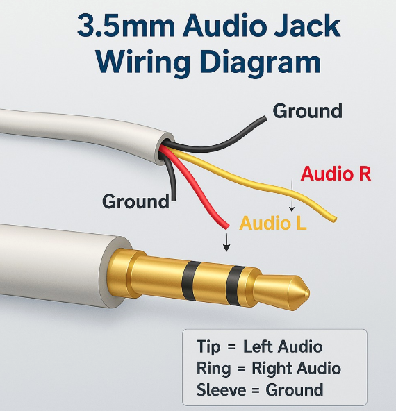 |
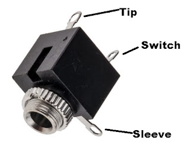 |
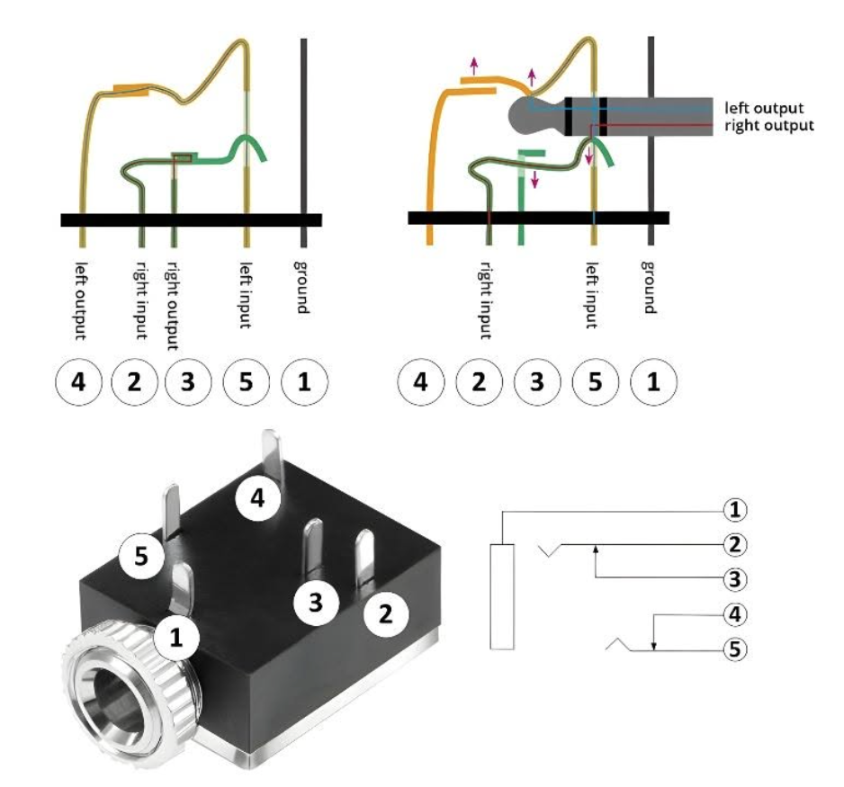 |
Notice that the sockets also have switch pins. This is how you would send a signal if you wanted a "default" or "normal" signal when nothing is plugged in. In modular synths these default signals are called "normalled" connections.
Many components, such as knobs, need a positive reference voltage in addition to ground.
Typically we will use the analog 3V3 (3.3 volts) pin for this reference voltage -- that is on pin 21, at the top right of the Daisy if you have the USB socket at the left. In this case, we can simply connect "pin 21 3v3 Analog" to our red positive rail on the breadboard. I recommend using red jumper wires for this. It makes sense to use 3v3 as our reference, because these analog GPIO pins can only detect values between 0v and 3v3.
A knob, or properly speaking, a potentiometer (or "pot"), is a component with variable resistance. Typically pots have three pins: the left and right pins hold the two reference voltages, and the middle pin (the "wiper") produces a voltage between these according to the position of the knob.
Place the pot on the breadboard to the right of the Daisy, so that each of the 3 pins has a unique 5-socket vertical track.
We can use our ground rail as one refernence voltage. Connect a jumper from the the left pin's column to the nearest ground rail.
Once we have a 3v3 rail set up, connect the pot right pin's column to this rail (again with a red jumper wire).
Typically we will use the analog 3V3 (3.3 volts) pin for the other reference voltage -- that is on pin 21, at the top right of the Daisy if you have the USB socket at the left. In this case, we can simply connect "pin 21 3v3 Analog" to our red positive rail on the breadboard. I recommend using red jumper wires for this. It makes sense to use 3v3 as our reference, because these analog pins can only detect values between 0v and 3v3.
Once we have 3V3 rail set up, connect the pot right pin's column to this rail (again with a red jumper wire).
Now the middle "wiper" pin of the pot needs to connect to one of the Analog-capable GPIO inputs on the Daisy. Again look at the pinout: these pins are prefixed with "A", such as "A0", "A1", etc. We'll need to pick one of these and wire it up to the wiper (using some jumper color that isn't red or blue). Also write down what the GPIO pin number was -- not the number of the board, not the "A" number, but the "D" number -- because we'll need that to configure our JSON file. E.g. if you used pin 27 on the board, which is marked "A5/D20" on the pinout, then the GPIO number we need is 20 (not 5 or 27)! Confusing, I know.
Here's an example of a breadboard with a Daisy wired up with a knob on GPIO pin 20 (board pin 27) and a mono audio socket for the left channel:
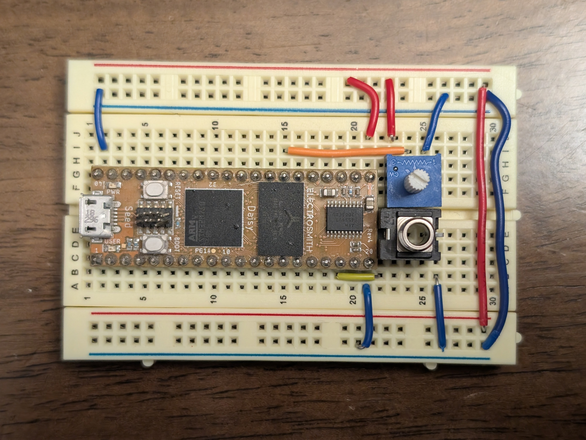
If we are doing any kind of GPIO connection, we'll need to define a custom JSON file to let Oopsy know what inputs & outputs we have and how to generate the code for them.
Every time we connect up a component to one of Daisy's GPIO pins, we need to modify our target JSON so that it knows what it is.
So far we hooked up a potentiometer to GPIO pin 20, so we can define our JSON file as follows -- create this file and save it as mydef.json in the same folder as your Max patch.
{
"som": "seed",
"components": {
"knob1": {
"component": "AnalogControl",
"pin": 20
}
}
}
Every component has
knob1AnalogControl because it is continuous input between 0v and 3v3. To tell Oopsy to use this JSON, send the message target mydef.json to the oopsy object in your patcher so that Oopsy knows to use it. (I recommend connecting a loadbang to this message so that it does it every time you open the patch).
Now you can use a param knob1 @min 0 @max 1 in your patcher to control your audio processing. Example gen~ patch:
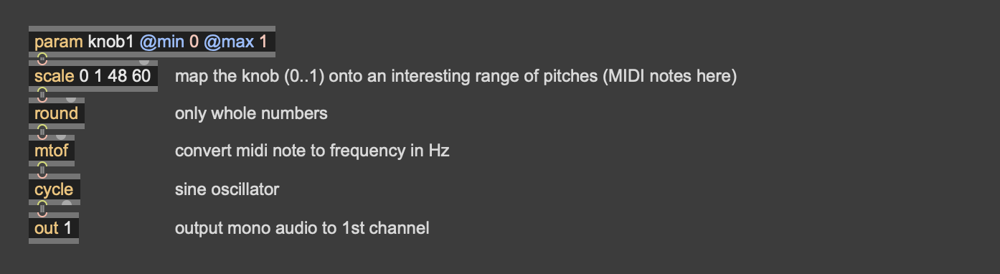
Button:
Switch as the component type and give it a name like button1. param button1 @min 0 @max 1 to access the button value. (You can also use different min & max values as desired!)LED:
Led as the component type, and pick a useful name like led1. history led1_out (i.e.,<componentname>_out). Set the LED on or off by sending 0 or 1 to this history object. There are lots of other possible components we can use, but this covers the basics.
Here's an example wiring diagram for a simple oscillator with button, knob, and audio output:
| circuit schematic | breadboard layout |
|---|---|
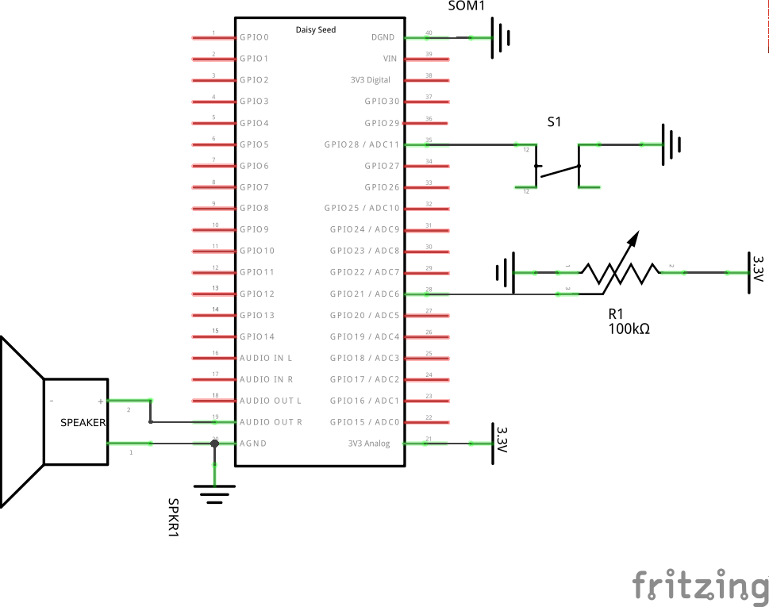 |
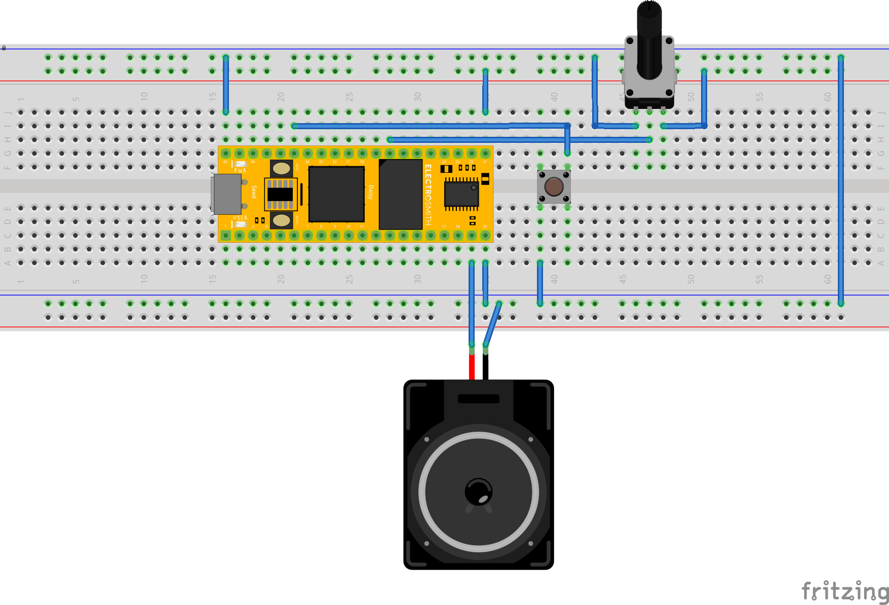 |
Custom JSON target file:
{
"name": "mydef",
"som": "seed",
"defines": {},
"components": {
"knob1": {
"component": "AnalogControl",
"pin": 21
},
"button1": {
"component": "Switch",
"pin": 28
}
}
}
Save this as mydef.json in the folder, and send the message target mydef.json to the oopsy object in your patcher so that Oopsy knows to use it. (I recommend connecting a loadbang to this message so that it does it every time you open the patch).
Now you can use a param button @min 0 @max 1 and a param knob1 @min 0 @max 1 in your patcher to control your audio processing. Example gen~ patch:
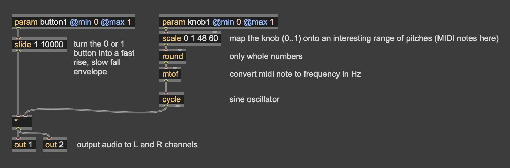
oopsy object options & messagesbang: tells Oopsy to compile the patch and try to flash it to a USB-connected Daisy. target <jsonfile>: where jsonfile is the path to a JSON file on disk. Tells Oopsy what JSON target definition to use. We have to make a JSON to configure all GPIO pin connections for our circuit.blocksize <N> where N can be 48, 32, 16, 8, 4, 2 or 1. How many audio samples pass in each block of processing between processing GPIO data. Making this lower will make inputs and outputs more responsive, but will also increase the CPU load. I suggest starting with 16 or 8, and increase only if you have to.samplerate 96khz, samplerate 48khz, samplerate 32khz: choose what sample rate to use. 48khz is normal, the same as DVD audio. 96khz may be desirable to help reduce aliasing artefacts with nonlinear audio algorithms, but CPU load will double. 32khz may have audibly lower quality, but will reduce CPU load.I recommend using a
loadbangobject to send your preferred settings tooopsywhen the patcher loads -- especially if you use a custom JSON target file.
Other options:
boost 0 or boost 1: Enabling boost will run the CPU at a higher clock speed, increasing performance (and energy use). I recommend enabling this unless you expect to use battery power. fastmath 0 or fastmath 1. Enabling this will reduce accuracy of many mathematical operations (power, trigonometry, etc.) to save CPU cost. This may reduce audio quality, so I do not recommend it unless absolutely necessary. Basic components:
| Component | Values | Pins | Options |
|---|---|---|---|
| Switch | name (0/1), name_press (0/1), name>_seconds (float) |
1 | type=momentary/toggle, polarity=normal/inverted, pullup/pulldown/nopull |
| Switch3 (3 position switch) | name (0/1/2) |
2 | |
| GateIn | name (0/1), name_trig (0/1) |
1 | invert=true/false |
| Encoder | name (-1/0/1), name_press (0/1), name_rise (0/1), name_fall (0/1), name_seconds (float) |
3 | |
| AnalogControl | name (0..1) |
1 | invert=true/false, flip=true/false |
| GateOut | name_out (0/1) |
1 | pullup/pulldown/nopull |
| Led | name_out (float) |
1 | invert=true/false |
| RgbLed | name_red_out, name_green_out, name_blue_out, name_white_out (all float 0..1) or name_out (-1..1) |
3 | invert=true/false |
| CVOuts | name1_out, name2_out (0..1) |
hardware 29 & 30 | 8bit/12bit, polling/DMA |
For a more items see https://raw.githubusercontent.com/electro-smith/oopsy/refs/heads/dev/source/component_defs.json -- there are examples there for
... And other things not listed can still be defined & created in C++.